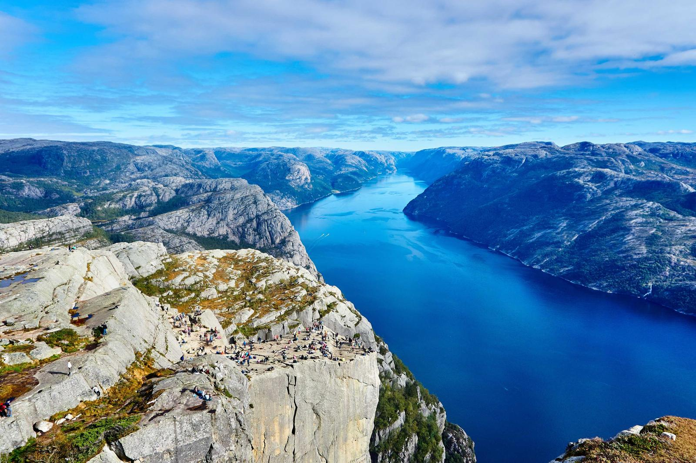
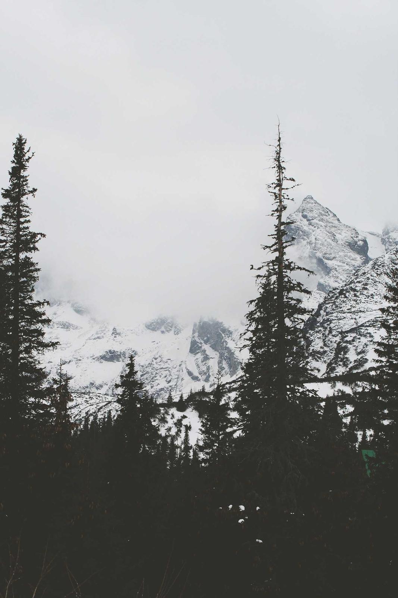

Photography Portfolio · 2022 — 2024
林澈 用光线，记录安静的时刻
自由摄影师，常年在路上。习惯在清晨和黄昏出门，寻找那些只存在几分钟的光。
- 作品
- 24
- 专题
- 4
- 常驻地
- 中国 · 杭州
Selected Works
作品精选
按主题浏览，点击任意照片可查看大图与拍摄参数。
该分类下暂无作品。

About
关于我
我是林澈，一名自由摄影师，也是一名喜欢走路的旅行者。 相机对我来说不是记录工具，而是把注意力留在某个瞬间的方式——清晨五点山谷里的雾， 傍晚六点老城区墙上移动的光，或者陌生人低头做手工时手背上的一道纹路。
目前主要拍摄风光与人文题材，长期使用 Sony 与 Canon 系统，也常带一台小巧的旁轴相机上街。 作品曾刊登于若干旅行与生活方式媒体。如果你喜欢安静、有呼吸感的画面，我们大概会聊得来。
- 器材Sony A7R V / Canon EOS R5 / Fujifilm X-T5
- 擅长风光 · 城市夜景 · 人文纪实 · 人像
- 服务商业拍摄 · 旅行跟拍 · 图片授权